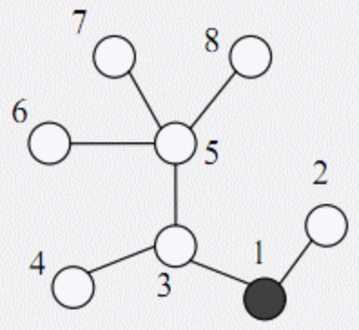
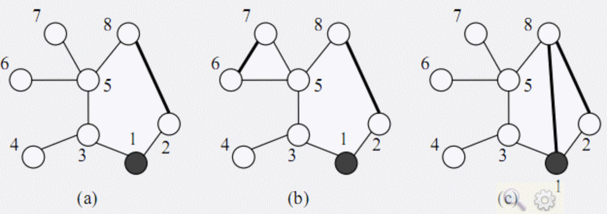

在一个地区中有 $n$ 个村庄，编号为 $1, 2, ..., n$。有 $n – 1$ 条道路连接着这些村庄，每条道路刚好连接两个村庄，从任何一个村庄，都可以通过这些道路到达其他任一个村庄。每条道路的长度均为 1 个单位。
为保证该地区的安全，巡警车每天要到所有的道路上巡逻。警察局设在编号为 1 的村庄里，每天巡警车总是从警察局出发，最终又回到警察局。
下图表示一个有 8 个村庄的地区，其中村庄用圆表示（其中村庄 1 用黑色的圆表示），道路是连接这些圆的线段。为了遍历所有的道路，巡警车需要走的距离为 14 个单位，每条道路都需要经过两次。

为了减少总的巡逻距离，该地区准备在这些村庄之间建立 $K$ 条新的道路，每条新道路可以连接任意两个村庄。两条新道路可以在同一个村庄会合或结束 （见下面的图例(c)）。 一条新道路甚至可以是一个环，即，其两端连接到同一个村庄。
由于资金有限，$K$ 只能是 1 或 2。同时，为了不浪费资金，每天巡警车必须经过新建的道路正好一次。
下图给出了一些建立新道路的例子：

在(a)中，新建了一条道路，总的距离是 11。在(b)中，新建了两条道路，总的巡逻距离是 10。在(c)中，新建了两条道路，但由于巡警车要经过每条新道路正好一次，总的距离变为了 15。
试编写一个程序，读取村庄间道路的信息和需要新建的道路数，计算出最佳的新建道路的方案使得总的巡逻距离最小，并输出这个最小的巡逻距离。
 Comet OJ
Comet OJ